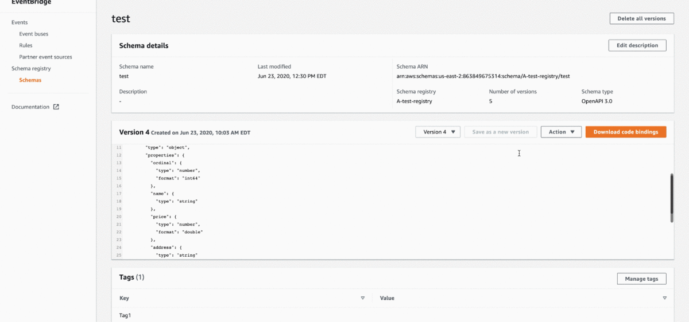
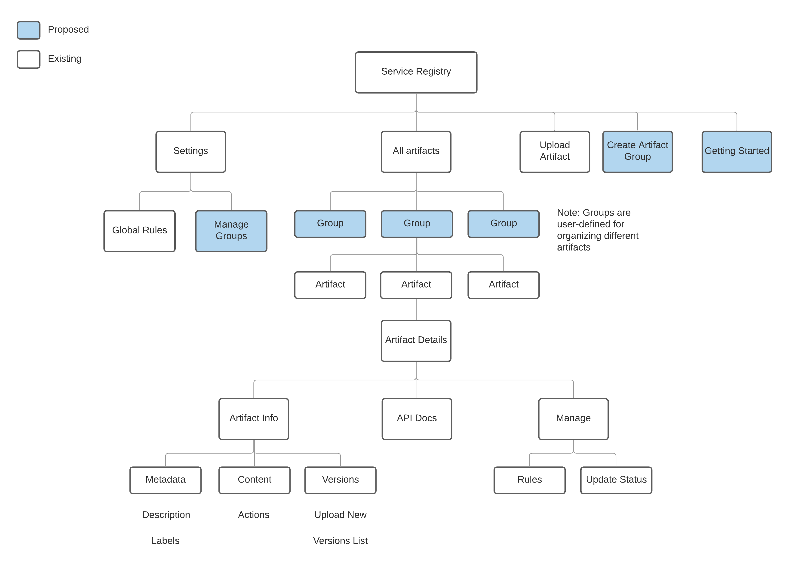

Process
Understanding competitors
I presented a SWOT + usability analysis of "schema" registry competitors. I shared recommendations
on key usability features with PM and engineering stakeholders.
*toot toot* "Best
competitive analysis I've seen at Red Hat" - Cat, my manager.

Embracing my computer science roots and installing demos of 3 competitor products
Defining the information architecture, user flows, and ideating at low-fidelity...
But wait what happened to talking to users? While there were questions to ask (especially about most common actions and workflows) at the beginning of the design process, researchers didn't come by appropriate interviewees because 1) pandemic and 2) not many had used this type of product yet.
